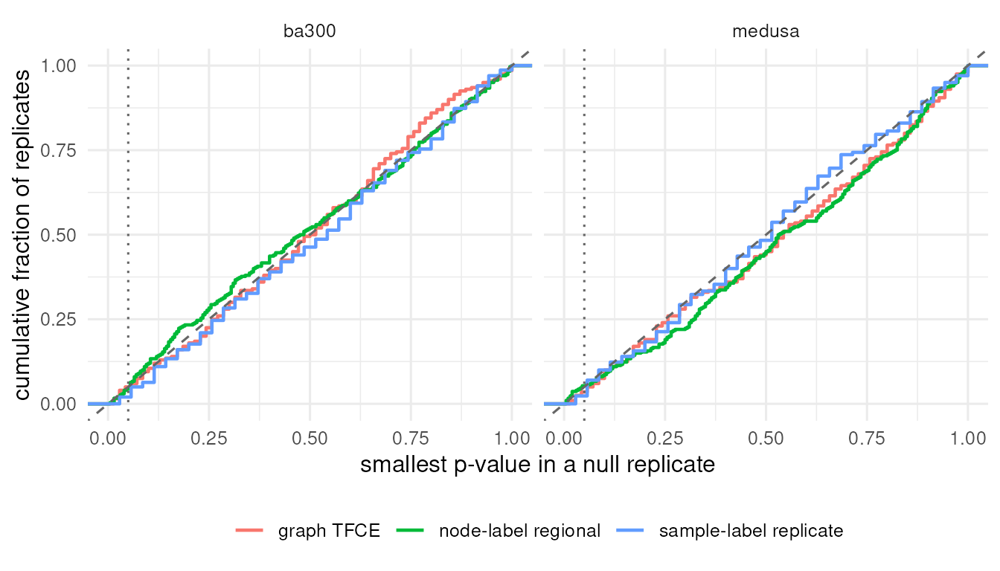
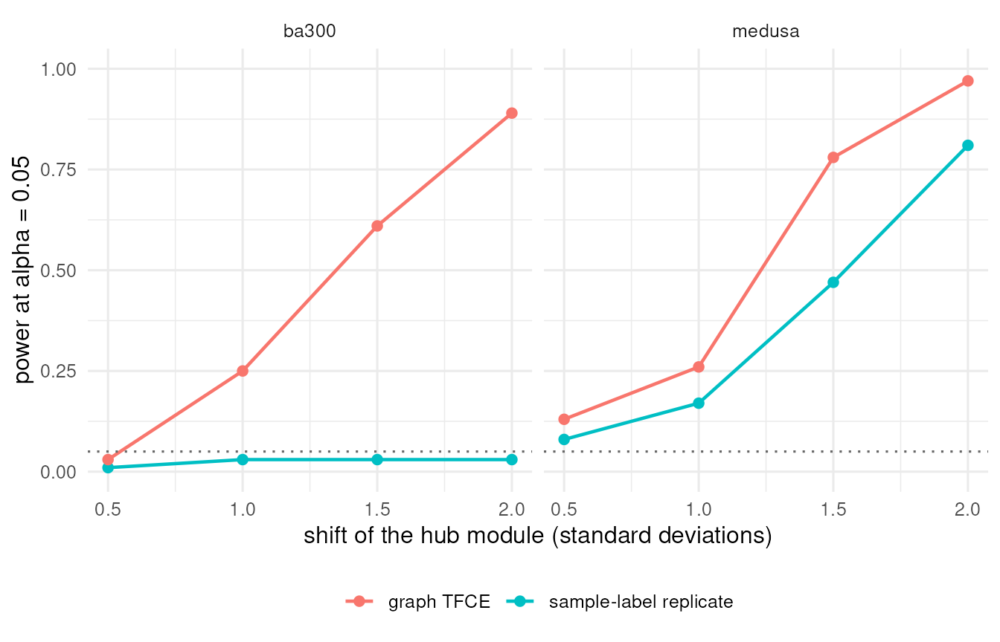
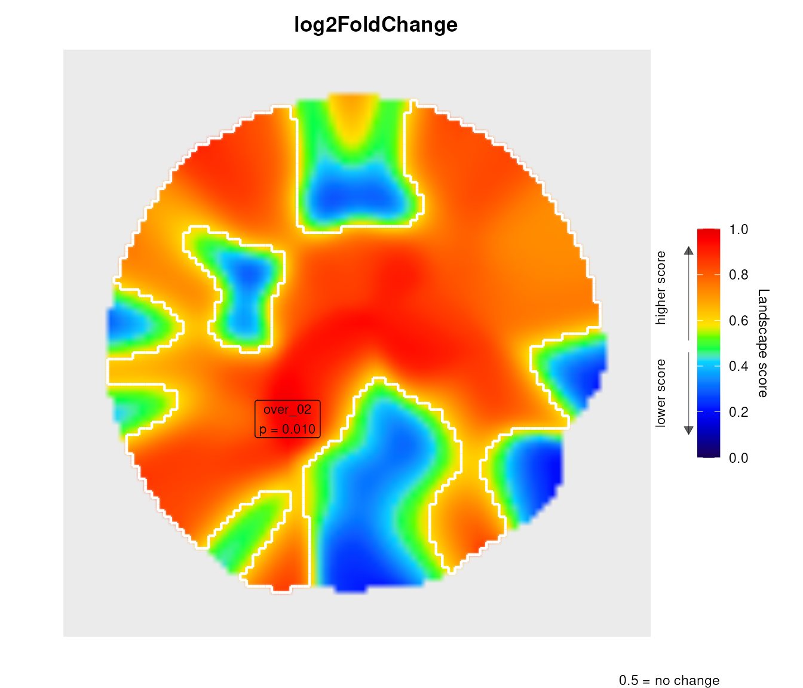

vignettes/levi_validation.Rmd
levi_validation.RmdThe unit tests of levi prove that the code computes what the documentation says. They do not prove that a p-value of 0.03 means what a reader expects. That needs simulation: data generated with no effect must produce p-values that are uniform, or conservative, and the family-wise error rate must stay at the nominal level. This vignette reports such a study and then applies the same tests to a real RNA-seq experiment.
Bioconductor builds every vignette on every commit, with a time
budget. The simulations here took about an hour on four cores, so they
are not run when the package is built. They were
produced once by inst/scripts/10-calibration.R, and only
small summary tables ship with the package. The vignette loads those
tables and draws them; every chunk below runs in seconds. The same holds
for the real dataset: DESeq2 and the STRING query were run once by
inst/scripts/11-airway-preprocess.R, and the vignette loads
a few kilobytes of text files. Both scripts are self-contained and
re-run with Rscript.
val <- extdata("validation")
list.files(val)
#> [1] "layout_sensitivity_summary.csv" "layout_sensitivity.csv"
#> [3] "null_pvalues_regional_ba300.csv" "null_pvalues_regional_medusa.csv"
#> [5] "null_pvalues_replicate_ba300.csv" "null_pvalues_replicate_medusa.csv"
#> [7] "null_pvalues_tfce_ba300.csv" "null_pvalues_tfce_medusa.csv"
#> [9] "power.csv" "README.md"
#> [11] "type1_error.csv"Each replicate is a dataset with no effect anywhere: independent normal values for every gene (node-label test) or 4 vs 4 samples drawn from the same distribution (sample-label tests). The family-wise error rate is the fraction of replicates in which the smallest p-value of the test fell at or below 0.05. Every levi test controls its search with a maximum statistic (Westfall and Young 1993; Nichols and Holmes 2002), so this fraction should be at most 0.05.
Two networks were used: the 30-node network shipped as
medusa.dat, and a 300-node scale-free graph
(Barabási-Albert, m = 2) laid out with Kamada-Kawai (Kamada and Kawai
1989), closer in size and degree distribution to a STRING
module.
type1 <- read.csv(file.path(val, "type1_error.csv"))
type1$fwer_ci <- sprintf("%.3f (%.3f - %.3f)", type1$fwer,
pmax(0, type1$fwer - 1.96 * type1$fwer_se),
pmin(1, type1$fwer + 1.96 * type1$fwer_se))
knitr::kable(type1[, c("test", "network", "design", "replicates",
"fwer_ci", "no_region")],
col.names = c("Test", "Network", "Design", "Replicates",
"FWER at 0.05 (95% CI)", "No region detected"),
caption = "Family-wise error rate under the global null. The last column
is the fraction of null replicates in which no region beyond the
threshold existed, so the landscape test had nothing to reject.")| Test | Network | Design | Replicates | FWER at 0.05 (95% CI) | No region detected |
|---|---|---|---|---|---|
| node-label regional | medusa | iid logFC | 300 | 0.053 (0.028 - 0.079) | 0 |
| sample-label replicate | medusa | 4 vs 4, exact | 300 | 0.023 (0.006 - 0.040) | 0 |
| graph TFCE | medusa | 4 vs 4, exact | 200 | 0.035 (0.010 - 0.060) | 0 |
| node-label regional | ba300 | iid logFC | 300 | 0.047 (0.023 - 0.071) | 0 |
| sample-label replicate | ba300 | 4 vs 4, exact | 300 | 0.020 (0.004 - 0.036) | 0 |
| graph TFCE | ba300 | 4 vs 4, exact | 200 | 0.050 (0.020 - 0.080) | 0 |
The distribution of the smallest p-value per replicate tells more than one number. If the test were exact and there were a single region, the curve would sit on the diagonal; with several regions and the maximum taken over all of them, the smallest p-value is stochastically larger than uniform and the curve sits below the diagonal. What must not happen is a curve above the diagonal at the left, which would mean anti-conservative p-values.
files <- list.files(val, pattern = "^null_pvalues_", full.names = TRUE)
nulls <- do.call(rbind, lapply(files, read.csv))
nulls <- nulls[is.finite(nulls$min_p), ]
ggplot(nulls, aes(x = min_p, colour = test)) +
stat_ecdf(geom = "step", linewidth = 0.8) +
geom_abline(slope = 1, intercept = 0, linetype = "dashed",
colour = "grey40") +
geom_vline(xintercept = 0.05, linetype = "dotted", colour = "grey40") +
facet_wrap(~ network) +
coord_cartesian(xlim = c(0, 1), ylim = c(0, 1)) +
labs(x = "smallest p-value in a null replicate",
y = "cumulative fraction of replicates", colour = NULL) +
theme_minimal(base_size = 12) +
theme(legend.position = "bottom")
The hub of each network and its seven nearest neighbours form the
responding module. Their treated samples are shifted by
effect standard deviations in a 4 vs 4 design. Power is the
probability that at least one region (or, for TFCE, at least one gene)
reaches p <= 0.05 under the sample-label null. The two tests answer
the replication question on the same data, one through the landscape and
one directly on the graph.
power <- read.csv(file.path(val, "power.csv"))
ggplot(power, aes(x = effect, y = power, colour = test, group = test)) +
geom_line(linewidth = 0.8) +
geom_point(size = 2) +
geom_hline(yintercept = 0.05, linetype = "dotted", colour = "grey40") +
facet_wrap(~ network) +
scale_y_continuous(limits = c(0, 1)) +
labs(x = "shift of the hub module (standard deviations)",
y = "power at alpha = 0.05", colour = NULL) +
theme_minimal(base_size = 12) +
theme(legend.position = "bottom")
Two things stand out. First, the graph test is uniformly more
powerful than the landscape test on the same data: it works on the nodes
and edges directly, whereas the landscape spreads an eight-gene module
over a Gaussian kernel and asks whether the resulting area
beats the largest area anywhere on the map. Second, on the 300-node
graph the landscape test has almost no power at any effect size tried:
eight shifted genes among three hundred, at the default smoothing,
produce a region whose excess mass is diluted by their unchanged
neighbours and by the edge midpoints that connect them to the rest of
the network. That is the degree weighting described in
?levi at work. The landscape is a map for reading spatial
organisation; when the question is “does this module respond”,
leviGraphTFCEInference() or
leviGraphClusterInference() is the right tool, and the
landscape is the figure that shows where it sits.
With only 70 label arrangements the p-value floor is 1/70, so power cannot approach one smoothly; it saturates when the observed arrangement is the most extreme of the seventy in nearly every replicate.
The landscape is drawn over coordinates, and force-directed layouts
are stochastic. The same 300-node graph and the same expression data
were laid out twenty times with Fruchterman-Reingold (Fruchterman and
Reingold 1991), and the node-label regional test was run on
each. Sensitivity to the layout can only be measured where the test
rejects, so the effect is deliberately large: a 20-gene module around
the hub shifted by 3 SD, with smoothing 20. Per layout the table reports
the smallest regional p-value, the number of genes attributed to
significant regions (leviRegionGenes() with the five
strongest supporters per region, so a single significant region yields
at most five genes) and the fraction of the true module among them; the
summary gives the mean pairwise Jaccard similarity of those gene sets.
TFCE, which never looks at coordinates, gives one answer for all
twenty.
lay <- read.csv(file.path(val, "layout_sensitivity.csv"))
lay_summary <- read.csv(file.path(val, "layout_sensitivity_summary.csv"))
knitr::kable(lay_summary, digits = 3,
col.names = c("Mean pairwise Jaccard of significant genes", "Layouts",
"TFCE smallest p (layout-free)"))| Mean pairwise Jaccard of significant genes | Layouts | TFCE smallest p (layout-free) |
|---|---|---|
| 0.407 | 20 | 0.029 |
summary(lay[, c("min_p", "n_regions", "n_sig_genes", "module_recovered")])
#> min_p n_regions n_sig_genes module_recovered
#> Min. :0.00500 Min. : 9.00 Min. :0.00 Min. :0.0000
#> 1st Qu.:0.02000 1st Qu.:13.75 1st Qu.:5.00 1st Qu.:0.2500
#> Median :0.02250 Median :14.00 Median :5.00 Median :0.2500
#> Mean :0.02975 Mean :14.70 Mean :4.25 Mean :0.2125
#> 3rd Qu.:0.03500 3rd Qu.:15.25 3rd Qu.:5.00 3rd Qu.:0.2500
#> Max. :0.07500 Max. :22.00 Max. :5.00 Max. :0.2500This is the quantitative form of a statement made throughout the documentation: a node-label landscape test is a statement about this drawing of the network. It is a legitimate exploratory instrument, and the regional p-value is honest about its own null, but conclusions that must not depend on the drawing belong to the graph-native tests.
The airway experiment (Himes et al. 2014) measured RNA-seq in
four airway smooth muscle cell lines, each treated with dexamethasone
and left untreated. DESeq2 (Love et al. 2014) with
~ cell + dex was run once, offline; the 80 genes with the
strongest response that STRING (Szklarczyk et al. 2021)
recognised, their STRING interactions (combined score >= 400) with a
Kamada-Kawai layout, and their per-sample log2 CPM were saved as text
files. The provenance is in
inst/extdata/airway/README.md.
aw <- function(f) extdata("airway", f)
genes <- read.delim(aw("airway_dex_genes.tsv"))
logcpm <- as.matrix(read.delim(aw("airway_dex_logcpm.tsv"), row.names = 1))
samples <- read.delim(aw("airway_dex_samples.tsv"))
nodes <- read.delim(aw("airway_string_nodes.tsv"))
edges <- read.delim(aw("airway_string_edges.tsv"))
c(genes = nrow(genes), nodes = nrow(nodes), edges = nrow(edges))
#> genes nodes edges
#> 78 78 80
table(samples$cell, samples$dex)
#>
#> trt untrt
#> N052611 1 1
#> N061011 1 1
#> N080611 1 1
#> N61311 1 1
set.seed(1)
land <- levi(
expressionInput = genes,
networkCoordinatesInput = nodes,
networkInteractionsInput = edges,
fileTypeInput = "stg",
geneSymbolInput = "Symbol",
readExpColumn = readExpColumn("log2FoldChange-log2FoldChange"),
signal_mode = "logfc",
logfc_k = 0.7,
resolutionValueInput = 30,
smoothValueInput = 40,
n_perm = 199)
land$regions$summary[, c("Region", "Direction", "Cells", "Mass", "PSpatial",
"Significant")]
#> Region Direction Cells Mass PSpatial Significant
#> 1 over_02 over 3137 0.1465020877 0.01 TRUE
#> 2 under_05 under 292 0.0061248969 1.00 FALSE
#> 3 under_06 under 80 0.0023996342 1.00 FALSE
#> 4 under_01 under 94 0.0015375709 1.00 FALSE
#> 5 under_04 under 53 0.0012107748 1.00 FALSE
#> 6 under_02 under 47 0.0005503123 1.00 FALSE
#> 7 over_01 over 30 0.0003056368 1.00 FALSE
#> 8 under_03 under 20 0.0002366954 1.00 FALSE
head(leviRegionGenes(land, top_n = 5), 10)
#> Region Gene NodeSignal Contribution Rank
#> 1 over_01 ERRFI1 0.8448008 2.19225098 1
#> 2 over_01 SOX4 0.1556136 0.49896057 2
#> 3 over_01 MEST 0.2129266 0.46730952 3
#> 4 over_01 GXYLT2 0.2490256 0.03740908 4
#> 5 over_01 DUSP1 0.8870244 0.03239733 5
#> 6 over_02 ZBTB16 0.9942000 35.96423413 1
#> 7 over_02 FAM107A 0.9670789 34.11838897 2
#> 8 over_02 KLF15 0.9576589 33.59717604 3
#> 9 over_02 SAMHD1 0.9330251 31.11654931 4
#> 10 over_02 CACNB2 0.9089563 29.59277927 5The null here asks whether the 80 fold-changes are arranged on this drawing more coherently than a random assignment of the same values would be. All 80 genes were selected because they respond to dexamethasone, so a strong result says the responders that interact are also drawn together, which is what a STRING layout of co-responding genes tends to produce. It says nothing about replication.
The eight samples allow the sample-label null. The natural model blocks on cell line, because the cell-line effect is large; but blocking leaves only 2^4 = 16 within-line label swaps and a p-value floor of 0.0625. levi says so:
groups <- samples$dex
tfce_blocked <- tryCatch(
leviGraphTFCEInference(logcpm, groups, nodes, edges, fileTypeInput = "stg",
test = "trt", control = "untrt", blocks = samples$cell),
warning = function(w) conditionMessage(w))
tfce_blocked
#> [1] "Only 16 distinct label arrangements are possible, so the smallest attainable p-value is 0.062, above alpha = 0.05. No result of this test can be significant at that level."Ignoring the blocks gives 70 arrangements at the price of a noisier statistic. This is the trade-off a four-donor paired design imposes, and no amount of permutation can escape it.
tfce <- leviGraphTFCEInference(logcpm, groups, nodes, edges,
fileTypeInput = "stg", test = "trt", control = "untrt")
head(tfce$statistic[order(tfce$statistic$PGlobal), ], 8)
#> Gene T TFCE POver PUnder PGlobal
#> SPARCL1 SPARCL1 18.035071 2005.85590 0.01428571 1.00000000 0.01428571
#> FSTL3 FSTL3 3.991650 31.48331 0.02857143 1.00000000 0.02857143
#> MEST MEST -4.594716 -32.71173 1.00000000 0.02857143 0.02857143
#> COL1A1 COL1A1 -8.355287 -448.23670 1.00000000 0.02857143 0.02857143
#> DUSP1 DUSP1 11.235797 477.35840 0.02857143 1.00000000 0.02857143
#> SOX4 SOX4 -8.649550 -215.05274 1.00000000 0.02857143 0.02857143
#> MT2A MT2A 7.655586 150.08559 0.02857143 1.00000000 0.02857143
#> GDF15 GDF15 -6.456184 -257.91625 1.00000000 0.02857143 0.02857143
#> GlobalSignificant
#> SPARCL1 TRUE
#> FSTL3 TRUE
#> MEST TRUE
#> COL1A1 TRUE
#> DUSP1 TRUE
#> SOX4 TRUE
#> MT2A TRUE
#> GDF15 TRUE
set.seed(1)
rep_land <- leviReplicateInference(logcpm, groups, test = "trt",
control = "untrt", networkCoordinatesInput = nodes,
networkInteractionsInput = edges, fileTypeInput = "stg",
logfc_k = 0.7, resolutionValueInput = 30, smoothValueInput = 40)
rep_land$regions$summary[, c("Region", "Direction", "Mass", "PSpatial",
"Significant")]
#> Region Direction Mass PSpatial Significant
#> 1 over_02 over 1.062776e-01 0.02857143 TRUE
#> 2 under_05 under 1.061545e-02 0.48571429 FALSE
#> 3 under_07 under 3.536998e-03 0.48571429 FALSE
#> 4 under_01 under 2.859631e-03 0.51428571 FALSE
#> 5 over_04 over 2.171011e-03 0.57142857 FALSE
#> 6 under_04 under 1.913876e-03 0.57142857 FALSE
#> 7 over_03 over 1.892812e-03 0.57142857 FALSE
#> 8 under_02 under 1.291917e-03 0.65714286 FALSE
#> 9 under_03 under 5.271901e-04 0.71428571 FALSE
#> 10 over_01 over 6.837481e-05 0.82857143 FALSE
#> 11 under_06 under 3.753880e-05 0.91428571 FALSE
scores <- setNames(genes$stat, genes$Symbol)
set.seed(1)
rew <- leviGraphRewiringInference(scores, nodes, edges, fileTypeInput = "stg",
threshold = 4, n_perm = 199)
# The STRING network of 78 responders is sparse (80 edges), so most
# clusters are single genes; show the connected ones.
clusters <- rew$regions$summary
clusters[clusters$Nodes >= 2,
c("Region", "Direction", "Nodes", "Mass", "PeakGene", "PSpatial")]
#> Region Direction Nodes Mass PeakGene PSpatial
#> 1 over_01 over 2 32.43325 INHBB 1.000
#> 8 over_08 over 3 49.20069 CCDC69 1.000
#> 13 over_13 over 2 35.05598 ADAMTS1 1.000
#> 18 over_18 over 3 46.25554 KLF15 1.000
#> 19 over_19 over 2 35.84988 STEAP2 1.000
#> 22 over_22 over 2 30.89437 ACSS1 1.000
#> 23 over_23 over 3 56.92308 CACNB2 1.000
#> 25 over_25 over 3 60.76118 SPARCL1 0.995
#> 30 over_30 over 2 30.27888 LAMA2 1.000
#> 210 under_02 under 10 159.91082 VCAM1 0.055The rewiring null (Maslov and Sneppen 2002) keeps every gene’s Wald statistic and every node’s degree and asks whether the clusters of strong responders need the specific STRING wiring. A small p-value here means the responding genes are connected to each other more than their degrees alone would predict.
scripts <- system.file("scripts", package = "levi")
# About an hour on four cores; writes inst/extdata/validation/*.csv
system2("Rscript", c(file.path(scripts, "10-calibration.R"), "4", "300"))
# A few minutes plus the STRING download; writes inst/extdata/airway/*.tsv
system2("Rscript", file.path(scripts, "11-airway-preprocess.R"))
sessionInfo()
#> R version 4.6.1 (2026-06-24)
#> Platform: x86_64-pc-linux-gnu
#> Running under: Ubuntu 24.04.4 LTS
#>
#> Matrix products: default
#> BLAS: /usr/lib/x86_64-linux-gnu/openblas-pthread/libblas.so.3
#> LAPACK: /usr/lib/x86_64-linux-gnu/openblas-pthread/libopenblasp-r0.3.26.so; LAPACK version 3.12.0
#>
#> locale:
#> [1] LC_CTYPE=en_US.UTF-8 LC_NUMERIC=C
#> [3] LC_TIME=en_US.UTF-8 LC_COLLATE=en_US.UTF-8
#> [5] LC_MONETARY=en_US.UTF-8 LC_MESSAGES=en_US.UTF-8
#> [7] LC_PAPER=en_US.UTF-8 LC_NAME=C
#> [9] LC_ADDRESS=C LC_TELEPHONE=C
#> [11] LC_MEASUREMENT=en_US.UTF-8 LC_IDENTIFICATION=C
#>
#> time zone: Etc/UTC
#> tzcode source: system (glibc)
#>
#> attached base packages:
#> [1] stats graphics grDevices utils datasets methods base
#>
#> other attached packages:
#> [1] ggplot2_4.0.3 levi_1.99.0 BiocStyle_2.40.0
#>
#> loaded via a namespace (and not attached):
#> [1] SummarizedExperiment_1.42.0 gtable_0.3.6
#> [3] xfun_0.61 bslib_0.12.0
#> [5] htmlwidgets_1.6.4 Biobase_2.72.0
#> [7] lattice_0.23-1 vctrs_0.7.3
#> [9] tools_4.6.1 generics_0.1.4
#> [11] stats4_4.6.1 parallel_4.6.1
#> [13] tibble_3.3.1 pkgconfig_2.0.3
#> [15] Matrix_1.7-6 RColorBrewer_1.1-3
#> [17] S7_0.2.2 desc_1.4.3
#> [19] S4Vectors_0.50.3 lifecycle_1.0.5
#> [21] compiler_4.6.1 farver_2.1.2
#> [23] stringr_1.6.0 textshaping_1.0.5
#> [25] statmod_1.5.2 Seqinfo_1.2.0
#> [27] codetools_0.2-20 htmltools_0.5.9
#> [29] sass_0.4.10 yaml_2.3.12
#> [31] pkgdown_2.2.1 pillar_1.11.1
#> [33] jquerylib_0.1.4 BiocParallel_1.46.0
#> [35] limma_3.68.5 DelayedArray_0.38.2
#> [37] cachem_1.1.0 abind_1.4-8
#> [39] tidyselect_1.2.1 digest_0.6.39
#> [41] stringi_1.8.9 dplyr_1.2.1
#> [43] reshape2_1.4.5 bookdown_0.48
#> [45] labeling_0.4.3 fastmap_1.2.0
#> [47] grid_4.6.1 cli_3.6.6
#> [49] SparseArray_1.12.2 magrittr_2.0.5
#> [51] S4Arrays_1.12.0 withr_3.0.3
#> [53] scales_1.4.0 rmarkdown_2.32
#> [55] XVector_0.52.0 matrixStats_1.5.0
#> [57] igraph_2.3.3 otel_0.2.0
#> [59] ragg_1.5.2 evaluate_1.0.5
#> [61] knitr_1.52 GenomicRanges_1.64.0
#> [63] IRanges_2.46.0 rlang_1.3.0
#> [65] Rcpp_1.1.2 glue_1.8.1
#> [67] xml2_1.6.0 BiocManager_1.30.27
#> [69] BiocGenerics_0.58.1 jsonlite_2.0.0
#> [71] R6_2.6.1 plyr_1.8.9
#> [73] MatrixGenerics_1.24.0 systemfonts_1.3.2
#> [75] fs_2.1.0